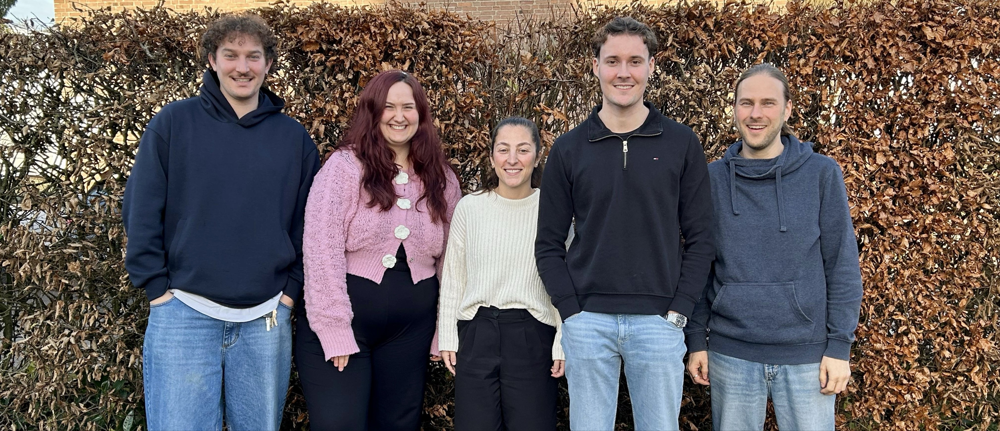

Hallo – Hello und Bonjour!
Seit dem 01. November 2025 sind wir die neuen Referendare am NCG. Wir sind (v.l.n.r):
Wir freuen uns sehr, Teil des NCG zu sein und darauf, in den kommenden 18 Monaten Unterrichtserfahrungen zu sammeln, an Projekten mitzuarbeiten und gemeinsam mit euch und dem Kollegium den Schulalltag zu gestalten.
Das Nicolaus-Cusanus-Gymnasium bildet aus: Unsere Referendar*innen absolvieren an unserer Schule die zweite Phase ihrer Lehrerausbildung, das 18-monatige Referendariat.
Dabei besuchen sie Unterricht in allen Jahrgangsstufen (Hospitationen), unterrichten unter Anleitung erfahrener Fachlehrer*innen (Ausbildungsunterricht) und übernehmen selbstständig Klassen und Kurse über einen Zeitraum von 12 Monaten (bedarfsdeckender Unterricht).
Begleitet werden sie vom Zentrum für schulpraktische Lehrerausbildung (ZfsL) Engelskirchen in Fach- und Kernseminaren.
An unserer Schule stehen Frau Gashi und Herr Jost als Ausbildungsbeauftragte zur Verfügung.
Zusätzlich engagieren sich die Referendar*innen in Fach- und Lehrerkonferenzen. Die Ausbildung endet mit dem Zweiten Staatsexamen, das ebenfalls am NCG stattfindet.